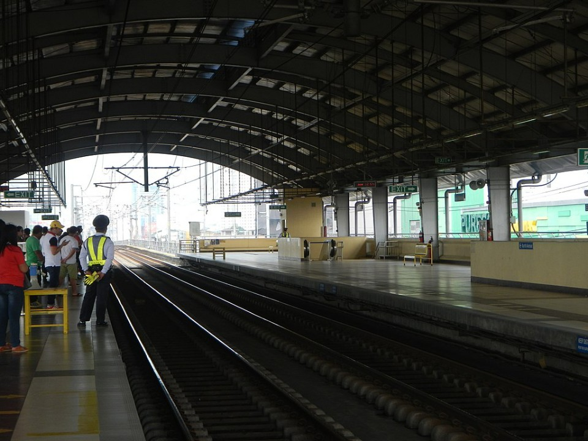
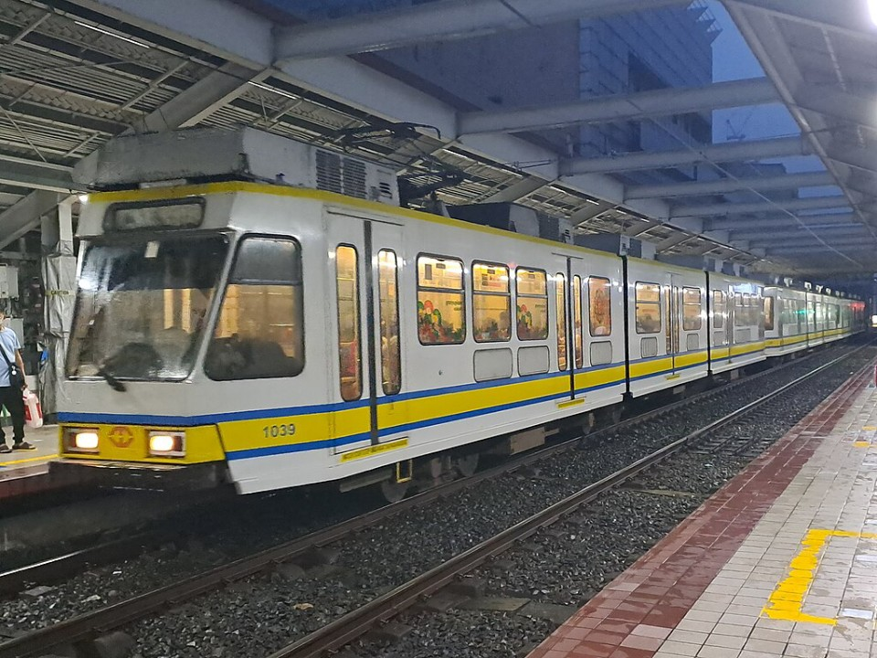

LRT Line 1
This article needs to be updated. (December 2023)[More info]
The Light Rail Transit Line 1, commonly referred to as LRT Line 1 or LRT-1, is a light rapid transit system line in Metro Manila, Philippines, operated by Light Rail Manila Corporation (LRMC) and owned by the Light Rail Transit Authority (LRTA) as part of the Manila Light Rail Transit System. Originally referred to as Metrorail and the Yellow Line, LRT Line 1 was reclassified to be the Green Line in 2012. It travels in a general north–south direction from Baclaran to Monumento, and then east–west from Monumento to Fernando Poe Jr.. Currently, the line consists of 20 stations and runs on 19.65 kilometers of fully elevated route. Although it has the characteristics of light rail, such as with the type of rolling stock used, it is more akin to a rapid transit system owing to its total grade separation and high passenger throughput.
First envisioned in a 1977 study conducted by Freeman Fox and Associates which suggested a street-level railway in Manila, the government revised this recommendation to an elevated system. In 1980, President Ferdinand Marcos created the LRTA and construction of the line began the following year. With its partial opening in 1984 and completion the following year, it became the first rapid transit service in Southeast Asia. LRT Line 1 would become one of the busiest among Metro Manila's three rapid transit lines; it served 216,667 daily average passengers in 2022, making it the second-busiest, just behind the MRT Line 3.
The line is integrated with the public transit system in Metro Manila, and passengers also take various forms of road-based public transport, such as buses and jeepneys, to and from a station to reach their intended destination. Although the line aimed to reduce traffic congestion and travel times in Metro Manila, the transportation system has only been partially successful due to the rising number of motor vehicles and rapid urbanization. Expanding the network's revenue line to accommodate more passengers, through extension projects, is set on resolving this problem.
| Light Rail Transit Line 1 | |
|---|---|

LRTA 1200 class train at Libertad station, December 2022
|
|
| Overview | |
| Status | Operational |
| Owner | Light Rail Transit Authority
Department of Transportation |
| Line Number | 1 |
| Locale | Metro Manila, Philippines |
| Termini | Baclaran
Fernando Poe Jr. |
| Stations | 20 |
| Websites | LRTA 
LRMC |
| Service | |
| Type | Light rapid transit |
| System | Manila Light Rail Transit System |
| Services | 1 |
| Operator(s) | Light Rail Manila Corporation
Former operators
|
| Depot(s) | Baclaran
Zapote (future) |
| Rolling stock | LRTA 1000 class
LRTA 1100 class LRTA 1200 class LRTA 13000 class |
| Daily ridership | 216,667 (2022) |
| Yearly ridership | 78 million (2022) |
| History | |
| Opened | December 1, 1984 |
| Last extension | October 22, 2010 |
| Technical | |
| Line length | 19.65 km |
| Number of track | Double-track |
| Character | Elevated |
| Track gauge | 1,435 mm standard gauge |
| Loading gauge | 4,050 mm × 2,600 mm |
| Minimum radius | Mainline: 100 m
Depot: 25 m |
| Electrification | 750 V DC overhead wires |
| Signalling | Alstom Atlas 100 ETCS Level 1
Former systems
|
| Maximum incline | Mainline: 3.535%
Depot spur line: 4% |
| Average inter-station distance | 903.65 m |
First envisioned in a 1977 study conducted by Freeman Fox and Associates which suggested a street-level railway in Manila, the government revised this recommendation to an elevated system. In 1980, President Ferdinand Marcos created the LRTA and construction of the line began the following year. With its partial opening in 1984 and completion the following year, it became the first rapid transit service in Southeast Asia. LRT Line 1 would become one of the busiest among Metro Manila's three rapid transit lines; it served 216,667 daily average passengers in 2022, making it the second-busiest, just behind the MRT Line 3.
The line is integrated with the public transit system in Metro Manila, and passengers also take various forms of road-based public transport, such as buses and jeepneys, to and from a station to reach their intended destination. Although the line aimed to reduce traffic congestion and travel times in Metro Manila, the transportation system has only been partially successful due to the rising number of motor vehicles and rapid urbanization. Expanding the network's revenue line to accommodate more passengers, through extension projects, is set on resolving this problem.
The line is predominantly aligned to the path of Taft Avenue (Radial Road 2) which was chosen largely due to its straight course. Later on, as Taft Avenue ends, it shifts to Rizal Avenue and Rizal Avenue Extension (Radial Road 9) then turning right on EDSA before ending at the corner of North and West Avenues and EDSA. The line links the cities of Quezon City, Caloocan, Manila, and Pasay, with the upcoming stations passing through the cities of Parañaque, Las Piñas, and Bacoor in Cavite.
Stations
The line serves 20 stations along its route. A twenty-first station is yet to be constructed. Eight stations which are part of the south extension are also set to be constructed south of Baclaran. Malvar station in Caloocan was previously proposed during the construction of the northern extension located between Monumento and Balintawak, becoming a bargaining object during the entire extension line's construction in the jurisdiction of Caloocan. However, the planned Malvar station was completely shelved by the Aquino administration.Three stations serve as connecting stations between other lines in the metro. Doroteo Jose is indirectly connected to the Recto of the LRT Line 2 through a covered walkway; Blumentritt is immediately above its PNR Metro Commuter Line counterpart; and EDSA is connected to the Taft Avenue station via a covered walkway. No stations are connected to other rapid transit lines within the paid areas, though that is set to change when the North Triangle Common Station, which has interchanges to MRT Line 3 and MRT Line 7, opens in 2023.
Legend
| Either under construction, proposed, unopened, or have been closed. | |
| Existing terminus |
List of stations
| Name | Distance (meters) | Connections | Location | |
|---|---|---|---|---|
| Between stations |
Total | |||
| North Triangle | - | - |
Manila MRT
Line 3 Line 7 Metro Manila Subway |
Quezon City |
| Fernando Poe Jr. | - | 0 | ||
| Balintawak | 1,870 | 1,870 | ||
| Monumento | 2,250 | 4,120 | Caloocan | |
| 5th Avenue | 1,087 | 5,207 | ||
| R. Papa | 954 | 6,161 | Manila | |
| Abad Santos | 660 | 6,821 | ||
| Blumentritt | 927 | 7,748 |
PNR
Blumentritt |
|
| Tayuman | 671 | 8,419 | ||
| Bambang | 618 | 9,037 | ||
| Doroteo Jose | 648 | 9,685 |
Manila LRT
Line 2 - Recto Manila MRT Line 8 - Lerma |
|
| Carriedo | 685 | 10,370 | ||
| Central | 725 | 11,095 | ||
| United Nations | 1,214 | 12,309 | ||
| Pedro Gil | 754 | 13,063 | ||
| Quirino | 794 | 13,857 | ||
| Vito Cruz | 827 | 14,684 | ||
| Gil Puyat | 1,061 | 15,745 | Pasay | |
| Libertad | 730 | 16,475 | ||
| EDSA | 1,010 | 17,485 |
Manila MRT
Line 3 - Taft Avenue |
|
| Baclaran | 588 | 18,073 | ||
| Redemptorist | - | - | Parañaque | |
| Manila International Airport |
- | - | ||
| Asia World | - | - | ||
| Ninoy Aquino | - | - | ||
| Dr. Santos | - | - | ||
| Las Piñas | - | - | Las Piñas | |
| Zapote | - | - | Bacoor, Cavite |
|
| Niog | - | - | Proposed interchange with
Manila LRT Line 6 |
|
Operations and services
The line operates from 4:30 AM until 10:15 PM on weekdays, and 5:00 AM until 9:45 PM on weekends and holidays. It operates almost every day of the year unless otherwise announced. Special schedules are announced via the PA system in every station and also in newspapers and other mass media. During Holy Week, a public holiday in the Philippines, the rail line is closed for annual maintenance, owing to fewer commuters and traffic around the metro. Normal operation resumes after Easter Sunday. During the Christmas and year-end holidays, the operating hours of the line are shortened due to the low ridership of the line during the holidays.Planning and funding

LRTA Class 1000 being built in Bruges in 1982
The Belgian Government granted a ₱300 million soft and interest-free loan for the project's construction, with a repayment period of 30 years. Additional funding was later sourced from a ₱700 million loan, provided by a Belgian consortium consisting of ACEC, La Brugeoise et Nivelles, Tractionnel Engineering International, and Transurb Consult. The consortium also supplied the line's first light rail vehicles, power control, signalling, and telecommunications, as well as provided training and technical assistance. Designed as a public utility rather than a profit center, the line was expected to incur a deficit through 1993, but complete its repayments within a period of 20 years.
Construction and opening
The government-owned Construction Development Corporation of the Philippines was the project's sole contractor. Single column cast-in-place concrete piers carrying precast concrete T-girders and a concrete deck slab were used for the original line from Monumento to Baclaran. The columns are spaced apart by 20 to 27 meters rising from a cap on top of bored or driven concrete piles. Four of the 2.1-meter wide girders are side by side in each span to accommodate bidirectional standard-gauge railway tracks located 6.1 meters above the street level.Driven piles were originally used for 80 percent of the project, with spread footings being used for the remaining portion. However, during construction, it was determined that bored piles should be utilized in some areas to mitigate noise and avoid potential damage to nearby buildings. Additionally, the original use of stockpiled precast piles caused clutter on the streets during construction.
In 1981, an economic recession hit the country and the government's were unable to provide counterpart funds for civil works and right-of-way acquisition, which amounted to 60 percent of the project's total cost, led to a delay in construction. Work finally resume after the Economic Recession and the EDSA Revolution in September of that year along Taft Avenue, between Epifanio de los Santos Avenue (EDSA) and Libertad Street. In order to make way for Carriedo station and a segment of tracks approaching the Pasig River, a department store and a classroom building owned by FEATI University were demolished.
The southern section, between the Baclaran and United Nations stations, was inaugurated on September 11, 1984, by President Ferdinand Marcos. Commercial operations along this section commenced on December 1. The line became fully operational on May 12, 1985, when the northern section between Central Terminal and Monumento opened. During the first several years, two-car trains that could accommodate up to 748 passengers were utilized. This amounted to a capacity of 20,000 passengers per direction.
Capacity expansions
First phase

The trains procured under the first phase of the capacity expansion in November 2006.
The capacity expansion project was one of the flagship projects of the administration of President Fidel V. Ramos. A loan agreement for the first phase of the capacity expansion project was signed in 1994. In August 1996, a consortium of Marubeni Corporation, Adtranz, and ABB was awarded the contract and was signed the following September. The project, undertaken at a cost of ₱4.1 billion, involves the procurement of seven four-car trains that were ordered from Hyundai Precision, and the refurbishment and conversion of the original two-car trains into three-car trains in 1999. In line with the introduction of the four-car trains, the station platforms were also extended. The project was completed in 2002.
During the first phase of the capacity expansion, a labor strike was launched by employees of Meralco Transit Organization (METRO, Inc.) in July 2000 as their operations and maintenance contract with the Light Rail Transit Authority (LRTA) was about to expire. It paralyzed the operations of the line for a week. The LRTA decided not to renew its contract with METRO, Inc. that expired on July 31, 2000, and the former assumed operational responsibility, LRTA undertook this responsibility until September 12, 2015, when the operations and maintenance of the line were privated to the Light Rail Manila Corporation for thirty-two years as part of the line's south extension.
Second phase
The trains procured under the second phase of the capacity expansion undergoing a test run in November 2006.
North extension

With the completion of the first phase of the MRT Line 3 in 1999, there were plans to extend Line 3 towards Monumento station (Phase 2) to create a seamless rail loop around Metro Manila. However, the extension was shelved by then-President Gloria Macapagal Arroyo in favor of a 5.7-kilometer extension of the LRT-1 to the MRT-3 North Avenue station. The project involved the construction of three stations: Balintawak, Roosevelt (renamed Fernando Poe Jr.), and a common station at North Avenue. However, due to disputes in the common station's location, the station would only begin construction on September 29, 2017. This was also known as the MRT-LRT Closing the Loop project.
Balintawak station, one of the two stations constructed under the north extension project in 2016.
In September 2008, then-mayor of Caloocan Enrico Echiverri, petitioned the government to construct Malvar station an intemediary station between Balintawak and Monumento. Two months later, two thousand residents from Barangay Bagong Barrio, where the station would be built, staged a protest along EDSA to urge the government to build the station. Malvar station would eventually be approved in July 2009. Though it was reported that the feasibility study for the station was completed, construction has yet to start.
Construction eventually began in June 2008. The joint venture of DMCI Holdings and First Balfour built the viaduct and the two stations, while the electrical and mechanical systems contracts were assigned different contractors.
The project was intended to integrate the LRT Line 1 and MRT Line 3 operations. Structure gauge tests were eventually conducted in the extension by February 2010 which found that the LRT Line 1 trains can run on MRT Line 3 tracks. On February 25, 2010, as part of the 24th anniversary of the People Power Revolution, President Gloria Macapagal Arroyo and Vice President Noli de Castro rode an MRT-3 train from Santolan to North Avenue before transferring to a Line 1 train that passed along the extension until Monumento station. Balintawak station opened on March 22, 2010, while Fernando Poe Jr. station opened seven months later, on October 22.
To integrate the operations of the LRT Line 1 and MRT Line 3, the then-Department of Transportation and Communications, under Secretary Jose de Jesus, launched an auction for a temporary five-year operations and maintenance contract for the two lines. The bidding was set by July 2011. Over 21 companies from around the world expressed interest to bid which included Metro Pacific Investments, Sumitomo Corporation, Siemens, DMCI Holdings, San Miguel Corporation, and others. After de Jesus resigned from the DOTC, his successor, Mar Roxas, halted the auction process and was later shelved.
An extension to the North Triangle Common Station is set to open in 2023.
Privatization
A plan to privatize the line was pursued as part of the south extension project. The bidding was set for August 2013, but failed. The project was rebidded, and on September 12, 2014, the operation and maintenance of LRT Line 1 and the construction of a ₱65 billion extension project to Bacoor, Cavite was awarded to the Light Rail Manila Corporation (LRMC), a joint venture company of Metro Pacific's Metro Pacific Light Rail Corporation (MPLRC), Ayala Corporation's AC Infrastructure Holdings Corporation (AC Infra), and the Philippine Investment Alliance for Infrastructure's Macquarie Infrastructure Holdings (Philippines) PTE Ltd. (MIHPL) (with Sumitomo Corporation following in May 2020). The consortium signed a concession agreement with the DOTr and LRTA on October 2, 2014. LRMC contracted the operation and maintenance of the line for 20 years to RATP Dev under its subsidiary RATP Dev Transdev Asia, a joint venture between Transdev and RATP Dev on December 8, 2014. The 32-year concession started on September 12, 2015.Rehabilitation
A rail replacement program commenced in 2016, as a continuation of the previous rail replacement program completed by the Light Rail Transit Authority. LRMC signed a contract with First Balfour for the structural restoration project of Line 1 on April 19, 2017, and in November 2018, LRMC tapped First Balfour and MRail, a subsidiary of Meralco for the rehabilitation of rectifier substations.LRMC has also rehabilitated the first and second-generation trains to add more trains servicing the line.

Baclaran station, the line's southern terminus, in 2008
Station layout and accessibility
Most stations are composed of only one level, accessible from the street below by stairway, containing the station's concourse and platform areas separated by fare gates. Some stations tend to have a concourse level below the platforms. The single-level stations of Line 1, however, was not built with accessibility in mind, due to the lack of barrier-free facilities such as escalators and elevators. Some stations, such as Monumento and EDSA, are connected at concourse level to nearby buildings, such as shopping malls, for easier accessibility. Some trains have spaces for passengers using wheelchairs.As of November 8, 2009, folding bicycles are allowed to be brought into trains provided that it does not exceed the LRTA's baggage size limitations of 2 by 2 feet. The last car of each train are also designated as "green zones", where folding bicycle users can ride with their bikes.
All stations have side platforms except for Baclaran, which has one side and one island platform. Due to the high patronage of the line, part of the platform corresponding to the front car of the train is cordoned off for the use of women, children, elderly and disabled passengers.
Shops and services
Inside the concourse of some stations are stalls or shops where people can buy food or drinks. Stalls vary by station, and some have fast food stalls. The number of stalls also varies by station, and some stations tend to have a wide variety.Stations such as Monumento and Baclaran are connected to or are near shopping malls and/or other large shopping areas, where commuters are offered more shopping varieties.
The current designed daily ridership of the line is 560,000 passengers and currently aims to increase the number of passengers being served on the line to more than 800,000 passengers, as the line's south extension is set to be fully operational by 2027.
On January 9, 2012, the line served a record 620,987 passengers during the Feast of the Black Nazarene (Carriedo station is near to the Quiapo Church), and since the day falls on a working weekday. In 2018, the line carried 300,000 to 500,000 passengers daily, due to the increased number of trains, from 86 vehicles to 113 vehicles available for daily trips. This gradually reduces the waiting time of passengers from 5 minutes to as much as 2 to 3.5 minutes. It also carried as much as 14.63 million passengers monthly in 2018. However, as of 2023, the waiting time has been officially reported at 5 to 6 minutes.
Rolling stocks of LRT Line 1

First-generation LRTA 1000 class (1984)
Second-generation LRTA 1100 class (1999)

Third-generation LRTA 1200 class (2006)

Fourth-generation LRTA 13000 class (2023)
The maximum design speed of these cars ranges between 60 and 70 kilometers per hour, but only run at a maximum operational speed of 60 kilometers per hour. Until 2011, all trains ran at the maximum speed until it was downgraded to 40 kilometers per hour due to the deteriorating condition of the railway tracks, except for the north extension which continued running on the 60 km/h maximum speed. After a three-year rail replacement program, the operating speed was restored to 60 km/h on April 5, 2021.
The line's fleet is being modernized to cope with increasing numbers of passengers. In the initial phase of its capacity expansion program completed in 1999, the line's seven four-car second-generation trains were commissioned providing an increased train capacity of 1,358 passengers while the original two-car trains capable of holding 748 passengers were transformed into three-car trains with room for 1,122. As part of the second phase of expansion, twelve new trains made in Japan by Kinki Sharyo and Nippon Sharyo were purchased in 2005 and were introduced in December 2006, providing a capacity of 1,388 passengers. The fourth-generation trains, ordered in 2017 with Japanese funding for the south extension project to replace the first-generation trains, were delayed in deployment due to the need to rectify factory defects in the roofs of the units that went undetected prior to delivery due to the inability to conduct factory inspections during the COVID-19 pandemic. Rectification works were conducted with costs shouldered by the manufacturer. The new train sets entered revenue service on July 20, 2023.
Prior to 1999, the first-generation trains were notorious for its lack of air conditioning, relying instead on forced-air roof ventilation for cooling. This however resulted in hot and stuffy rides. Although the entry of the second-generation trains in 1999 marked the introduction of air-conditioned trains in the line, the problem was fully addressed after a preparatory rehabilitation program completed in 2001 allowed the installation of air conditioners to the older rolling stock in 2004.
LRMC has also built an in-house laboratory for production, manufacturing, fabrication and repair of train parts that are no longer available in the market.
The Passenger Assist Railway Display System, a passenger information system powered by LCD screens installed near the ceiling of the train that shows news, advertisements, current train location, arrivals and station layouts, are already installed in the third-generation trains, along with the trains of Line 2 and the first-generation trains of Line 3. As of the 4th quarter of 2023, these units were discreetly removed and prior to removal, were no longer operating.

Different types of rolling stock at the line's depot in Baclaran, Pasay. The newer fourth-generation trains are the red trains on the right.
Depot
The line maintains an at-grade depot in Baclaran, Pasay. It serves as the center of the operations and maintenance of the line. It is connected to the mainline through a spur line. Before its expansion, the depot had a capacity of 145 light rail vehicles and an area of 6.4 hectares. It was expanded to an area of 10.6 hectares to accommodate 197 vehicles, with Shimizu Corporation and First Balfour implementing the project. Expansion works were completed after the depot was inaugurated on February 23, 2022.A satellite depot is being constructed in Zapote as part of the line’s south extension project. When completed, the satellite depot will handle 72 light rail vehicles.
Signalling
New Alstom signal lights
The original signalling system used in the LRT Line 1 was based on fixed block and relay type trackside systems. Trains had an automatic train stop system that activates if the train passes by a red signal or over-speeding. Based on a procurement plan published by the Light Rail Transit Authority, most of the signalling equipment, including track circuits, were supplied by ACEC.
In 2007, as part of a capacity expansion project, the signalling system was replaced with a signalling and train control system based on automatic train protection (ATP) and automatic train supervision (ATS) using Siemens technology. The ATP system monitors the speed of the trains, while the ATS system directs train operations. Prior to the 2022 upgrade, the signalling system was designed to operate at a headway of 112 seconds. Aside from the ATP and ATS systems, its subsystems include train detection through axle counters, and microprocessor-based interlocking.
The signalling system was again upgraded as part of the line's south extension. Alstom was awarded a contract in February 2016 to supply the signalling and communications systems for the line. Alstom supplied the Atlas 100 solution based on ETCS Level 1. The testing and commissioning phase of the upgraded signalling system started in November 2021 and was completed on February 1, 2022.
Tracks


Twinblock ties employed on the Direct fixation tracks (left) and Ballast tracks (right)
The tracks in the original 13.95-kilometer line consist of 50-kilogram-per-meter rails designed to the EB 50T rail profile, while the tracks in the future extension line consist of 54-kilogram-per-meter rails designed to the UIC 54 rail profile.
Due to the deterioration of the rail tracks in the original line, speed restrictions were implemented in 2011 except for the north extension. In 2012, a contract to replace 23 kilometers of rails was awarded to the joint venture of Oriental and Motolite Marketing Corporation, Korail, Erin-Marty Fabricators Company, Inc., and Jorgman Construction and Development Corporation. However, there were delays in the project implementation until February 2014, when the then-Department of Transportation and Communications issued a notice to proceed for the joint venture. The first phase of the replacement started in 2014, while the rails at Monumento station were replaced in March 2015. The first phase of the rail replacement was completed in December 2015. The second and final phase of replacement works commenced in August 2016 by the Light Rail Manila Corporation, which contracted Joratech to replace 26 kilometers of rails and was completed in 2017. This was intended to increase the operating speed from 40 kilometers per hour to 60 kilometers per hour and was achieved on April 5, 2021.
South extension

Construction of the Cavite Extension Project viaduct along Ninoy Aquino Avenue in July 2021.

The girder launcher along Radial Road 1 approaching Roxas Boulevard in November 2021.
Construction of Manuyo Uno station viaduct along C-5 Road Extension in April 2023.

Construction of Manila Line 1 south extension depot (Manuyo Uno station) along C-5 Road Extension in April 2023.
The original plan for the line's extension as the MRT Line 6, which was identified in the Metro Manila Urban Transportation Integration Study Master Plan by the Japan International Cooperation Agency in 1999, would have constructed a 12 to 15-kilometer elevated railway from Baclaran to Imus, with extensions leading to Cavite City (10.0 km), Dasmariñas (14.5 km), Airport, Sucat (9.0 km), and Alabang (12.0 km). However, the project never materialized.
The project was first approved by the National Economic and Development Authority in 2000, while the Implementing Agreement for the project was approved in 2002, to be undertaken by SNC-Lavalin as a public-private partnership project. The proposal however was subsequently terminated in 2006. In the same year, the government worked with International Finance Corporation, White & Case, Halcrow and other consultants to conduct an open-market invitation to tender for the extension and for a 40-year concession to run the extended line. However, the project was shelved months before Gloria Macapagal Arroyo would end her term as President.
The plans project was re-approved in March 2012. Construction was expected to start in 2014 but was delayed due to right of way issues. The issues were resolved in 2016 and on May 4, 2017, the project broke ground. The two-phase project would be implemented in a hybrid scheme (combination of the official development assistance funds from Japan and the private proponent, the Light Rail Manila Corporation). Civil works on the extension began on May 7, 2019. The project pegged at ₱64 billion has suffered [[cost overrun]]s due to construction delays brought about by the COVID-19 pandemic and pending right-of-way issues of the second phase of the project.
The line would be extended from Parañaque southwards, connecting Las Piñas and Bacoor to the Mega Manila railway network. Aside from the construction of eight stations (Redemptorist, Manila International Airport, Asia World, Ninoy Aquino, Dr. Santos, Las Piñas, Zapote, Niog) and another two planned stations (Manuyo Uno and Talaba), the extension project also features the construction of three intermodal facilities, one satellite depot located at Zapote, and mass upgrades to the existing Baclaran depot. The construction of the extension line is being built using a full span launching method, renowned as one of the fastest methods of construction for bridges and elevated viaducts that cuts time and total land space needed for construction. As the first railway line to utilize the new construction method, a total of 203 pi-girders were used for the construction of the extension's first phase; the last of which was laid on February 7, 2022. The project is expected to cater more than 800,000 passengers daily once completed.
The LRMC partnered with Bouygues Construction for the civil works, Alstom for the installation of the signalling and communication systems, and the RATP Dev Transdev Asia for the overall engineering, procurement, consultation, construction and assistance services for the project.
In August 2023, businessman Manny Villar bared plans to take over the extension project, noting the difficulty of LRMC extending the line to Cavite due to right-of-way issues. A portion of the extension will pass by Villar's properties in [[Las Piñas]], and according to Villar, right-of-way acquisition
will not be a problem. He also plans to further extend the line into Cavite province should the unsolicited proposal be approved.
As of November 11, 2023, the project is 94.1% complete. Phase 1 of the extension is slated to be operational by the 4th quarter of 2024, with full operations by 2027.
Second north extension
Columns of the under-construction LRT-1 extension to the North Triangle Common Station in August 2021.
This section needs to be updated. (December 2023)[More info]
Rizal Day bombings
On December 30, 2000, during the Rizal Day, a 1000 class LRV train (Car number 1037) was involved in the Rizal Day bombings at Blumentritt station. The attack on the line killed some 22 people and injured hundreds. Eight members of both Jemaah Islamiyah and the Moro Islamic Liberation Front (MILF), which include Hambal, Asia's most wanted man, and Fathur Rahman al-Ghozi, were charged with plotting and masterminding the attacks in 2003, some three years after the attacks. Three suspects were put on trial, with al-Ghozi receiving 17 years in prison due to the illegal possession of explosives. Al-Ghozi later died in a firefight after attempting to escape from prison.Other incidents
- On January 3, 2008, a fire blazed at a shopping mall in Baclaran. Due to the smoke, the Baclaran station was temporarily closed. A provisional service was implemented between EDSA and Monumento (at the time, the north extension was not opened yet), with southbound trains still proceeding towards Baclaran to only serve as a turnback siding. The station remained closed the following day until it was reopened a few days later.
- On August 11, 2008, a fire blazed in a mall near the Baclaran station. The station was closed to the public until the station was reopened on August 13.
- On December 8, 2008, a train encountered a glitch while approaching Carriedo station.
- On June 24, 2010, two trains (1000 and 1200 class) collided at Balintawak station. As a result, LRVs 1248 and 1247 sustained damage. There were plans to restore it, but the involved cars remain idle as of 2022.
- On February 18, 2011, two trains (1000 and 1200 class) collided near Fernando Poe Jr. Station in Quezon City at the reversing tracks, around a kilometer away to the east. There were no passengers onboard when the incident happened. The cause of the collision is yet to be determined, whether due to driver error or technical malfunction.
- On April 15, 2011, a door malfunction disrupted the operations of Line 1 at Blumentritt station.
- On June 21, 2011, at 8:00 AM, a train suffered a short circuit in one of its electrical components at Libertad station. On the same day, at 2:23 PM, a power cable was hit by lightning, disrupting the line's operations for three hours.
- On August 30, 2012, at 5:50 AM, a woman committed suicide after jumping in front of an approaching train at EDSA station. Operations were disrupted until operations resumed at 9:40 AM.
- On December 21, 2012, a train stalled at the Monumento station.
- On November 14, 2014, a signalling fault at Fernando Poe Jr. station limited the operations between Monumento and Baclaran stations. The situation normalized at 3:57 PM.
- On May 23, 2015, thousands of passengers were stranded after two trains (1000 and 1200 class) collided near the Monumento station. A train driver was hurt after the impact caused his head to slam into the dashboard of the train. The accident, later revealed to be caused by power fluctuation that affected the signalling system, forced passengers to alight from the station until services was restored around 1:00 PM at the same day.
- On March 10, 2016, a 1st generation train car door was left open while running between Central Terminal and Pedro Gil stations. The problem was fixed at the Pedro Gil station.
- On March 22, 2016, the doors of a 1st generation train car at the Central Terminal station failed to open, leaving passengers trapped inside the train.
- On September 26, 2016, a faulty door in a 1st generation train car suddenly slammed shut in less than a second. No one was injured.
- On November 6, 2017, a man's leg got stuck when a train door closed at the Gil Puyat station. The man was dragged at the platform when the train was moving, leaving the man with severe injuries. The man was then sent to a nearby hospital, where he was confined in an intensive care unit. According to a report, a number of trains, particularly the 1000 class trains, do not have sensors, that detects an object between doors.
- On November 27, 2017, an 1100 class train door malfunctioned after a passenger forcibly opened it at Vito Cruz station, causing the sensor to malfunction. The train continued its journey with the door left open, and a passenger recorded this incident on camera.
- On February 20, 2018, at around 6:00 AM, a train at R. Papa station unloaded 120 passengers after the air pressure gauge inside the train malfunctioned. The operations returned to normal 30 minutes later.
- On July 21, 2018, at around 6:00 AM, a contact wire sparked near Libertad station. A provisional service between Fernando Poe Jr. and United Nations stations was implemented. Normal operations resumed at 2:59 PM after the cable was fixed.
- On September 26, 2018, a faulty 1st generation train door was unable to open at the Balintawak station. A passenger pushed the door open and was able to disembark. The next passenger pushed the door but it abruptly closed on him but managed to get through.
- On October 3, 2019, a mechanical problem limited the LRT-1 operations between Monumento and Baclaran stations. The operations returned to normal at 1:50 AM.
- On November 6, 2020, a 1st generation train car emitted smoke at Gil Puyat station at 2:00 PM due to a catenary fault. Passengers were evacuated, and the line implemented a provisional service from Balintawak to Central Terminal and vice versa. The situation normalized at 8:00 PM.
- On April 4, 2022, a train suffered a glitch at Tayuman station, causing a speed restriction of 25 kilometers per hour. Operations normalized at 7:34 AM.
- On February 17, 2023, operations were limited between Fernando Poe Jr. and Gil Puyat due to electrical problems at Libertad station.
- On April 14, 2023, at 10:17 AM, a speed restriction of 25 kilometers per hour was put in place in the whole train line due to the reported fault of the affected LRV. At 10:25 AM, the operations stop in whole line due to the fault of affected train at Bambang station northbound and the line implemented a provisional service from Baclaran to Central Terminal and vice versa at 10:52 AM. Operations normalized from Baclaran to Fernando Poe Jr. and vice versa at 11:01 AM.
- On August 19, 2023, a 26-year-old passenger jumped onto the tracks at Blumentritt Station just as a train was approaching. The train operator swiftly activated the emergency brake, preventing a catastrophe. Provisional service was implemented from Baclaran to Central and vise versa at 6:12 AM. The passenger was successfully rescued by first responders at 6:33 AM. Despite suffering head injuries and a severed left foot, the passenger is now in stable condition after receiving prompt medical attention. Operations resumed by 6:44 AM.
- On August 24, 2023, at 12:32 PM, a 2nd generation trainset experienced a mechanical problem while traveling from EDSA Station to Baclaran Station, leading to partial operations between Gil Puyat and Fernando Poe Jr. stations. Full operations resumed on August 26, 2023, at 10:30 AM.
Light Rail Transit Line 1 by Justin - official music video